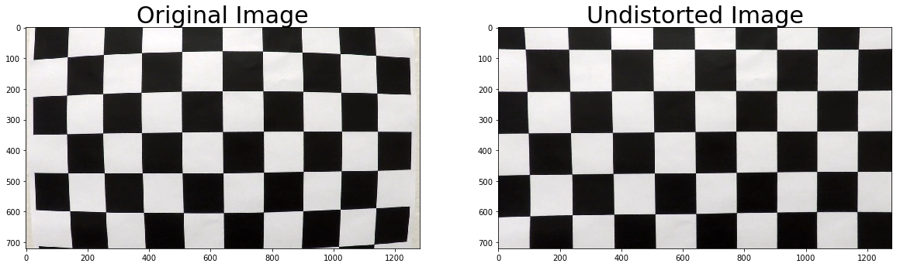
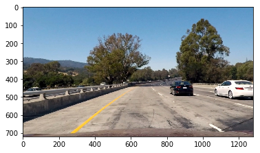
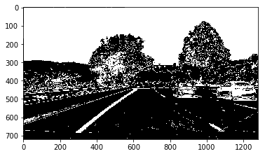
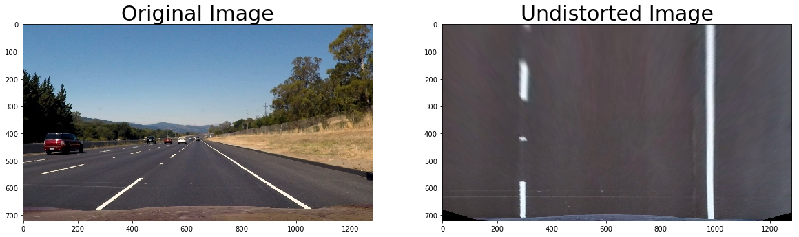
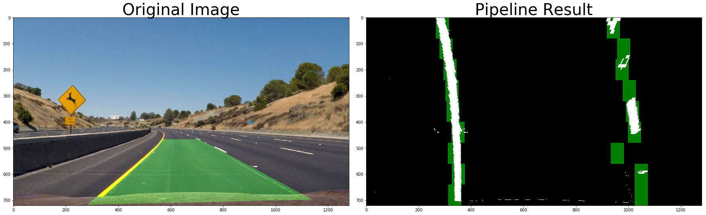
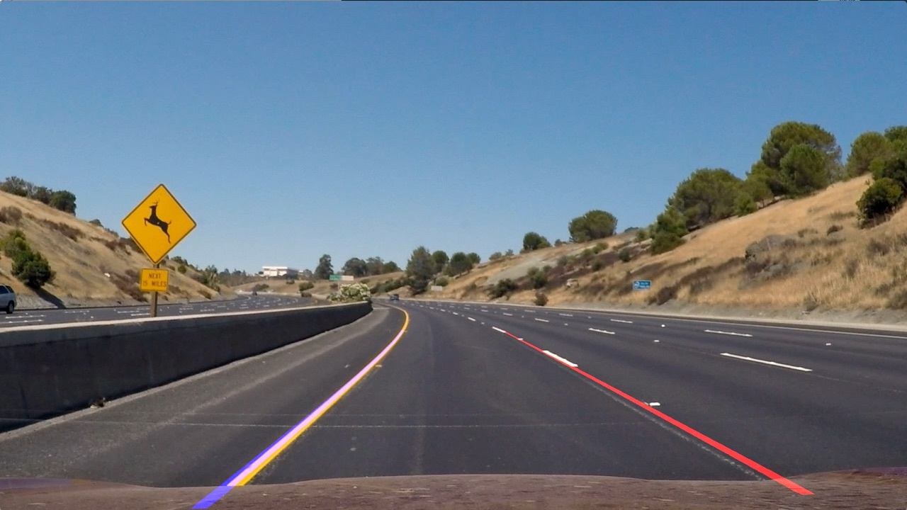
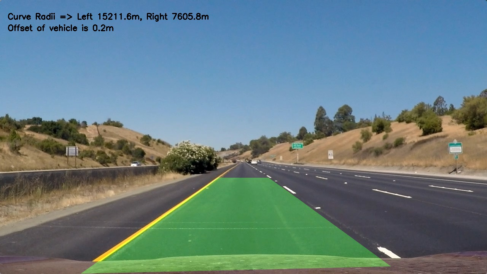

The goals / steps of this project are the following:
The code for this step is contained in code cells [7] and [8] of the IPython notebook located in "model_v5.ipynb".
I start by preparing "object points", which will be the (x, y, z) coordinates of the chessboard corners in the world. Here I am assuming the chessboard is fixed on the (x, y) plane at z=0, such that the object points are the same for each calibration image. Thus, objp is just a replicated array of coordinates, and objpoints will be appended with a copy of it every time I successfully detect all chessboard corners in a test image. imgpoints will be appended with the (x, y) pixel position of each of the corners in the image plane with each successful chessboard detection.
I then used the output objpoints and imgpoints to compute the camera calibration and distortion coefficients using the cv2.calibrateCamera() function. I applied this distortion correction to the test image using the cv2.undistort() function and obtained this result:

To demonstrate this step, I will describe how I apply the distortion correction to one of the test images like this one:

I used a combination of color and gradient thresholds to generate a binary image (thresholding steps at code cell [9]). Here's an example of my output for this step.
The combination of color transforms, gradients and thresholds that worked best in my case was:
| Method | Parameters |
|---|---|
| Gradient X | sobel_kernel=5, thresh=(20, 255) |
| Gradient Y | sobel_kernel=5, thresh=(20, 255) |
| Combined Gradient Magnititude | sobelkernel=5, magthresh=(60, 255) |
| Gradient Direction Threshold | sobel_kernel=5, thresh=(1.4, Pi/2) |
| HLS Colour Space Thresholding | Channel='S', thresh=(90, 255)) |
These were combined into a binary image using the logical operation below:
combined[((gradx == 1) & (grady == 1)) | ((magbinary == 1) & (dirbinary == 1)) | (hls_binary==1)] = 1

The code for my perspective transform includes a function called reproject(), which appears in code cell [8] in the file model_v5.ipynb. The reproject() function takes as inputs an image (img), as well as source (src) and destination (dst) points. I chose the hardcode the source and destination points in the following manner:
src = np.float32([(200, 720), (580, 480), (720, 480), (1050, 700)])
dst = np.float32([(280, 720), (400, 190), (920, 190), (960, 720)]) This resulted in the following source and destination points:
| Source | Destination |
|---|---|
| 200, 720 | 280, 720 |
| 580, 480 | 400, 190 |
| 720, 480 | 920, 190 |
| 1050, 700 | 960, 720 |
I verified that my perspective transform was working as expected by drawing the src and dst points onto a test image and its warped counterpart to verify that the lines appear parallel in the warped image.

The code to identify lane pixels is in code cell [12]. Here I use a convolution to slide across the image to identify "hot" pixels. As the window slides across the image from left to right and any overlapping values are summed together, creating the convolved signal. The peak of the convolved signal is where there was the highest overlap of pixels and the most likely position for the lane marker. The output of this can be seen in the image labelled "Pipeline Result" below.
I then took these 18 convolved windows (9 each side) and used them to mark the "hot" pixels in the image where I gathered their (x,y) coordinates. I then took these points and fit a 2nd order polynomial to them using function measureCurve() in code cell [13]. The result of this can be seen in the figure below with the blue and red curves fitted.
  Road Image with 2nd order polynomial
I did this in code cell [13] by using the derivation of the radius of a second order function. This result was in pixels so I multiplied through by the number of meters per pixel in the X and Y directions to convert the radius into the real world units of meters.
I implemented this step in code cell [16] in the function carpetPlotter(). It really does look like a green carpet. Here is an example of my result on a test image:

Here's a link to my video result
I found that combining a combination of color transforms, gradient and thresholds worked best to detect the lane lines. I found when I only used the gradient and thresholding the lane lines often ended up hollow when using a kernel size of 5. I believe this is to do with the lane line being too flat in colour at this kernel size. When adding in the thresholding on the S channel of the HLS colour space I found these lane lines fill in.
My pipeline works well in sunny well lit videos. However, when large shadows appear, like in the challenge video, it has issues detecting the lane lines. This could be improved by using the H Channel of the HLS colour space which is less sensitive to shadows.